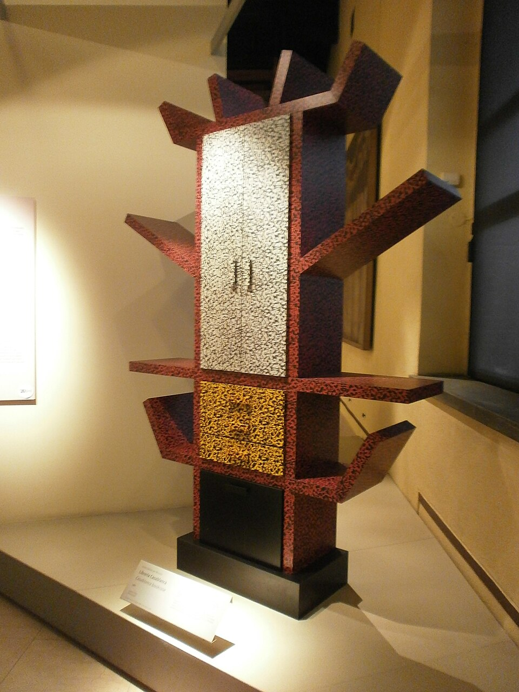
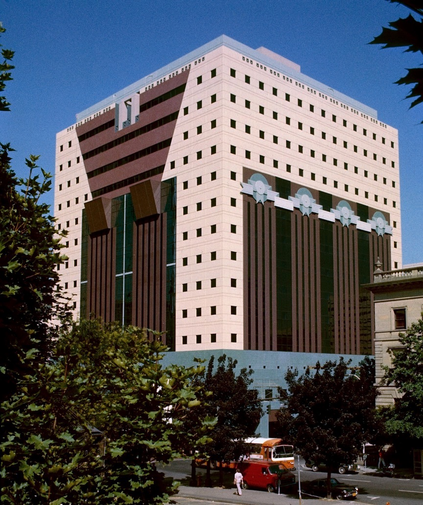

If Mid-Century Modern was optimistic, Postmodernism was ironic. If modernism trusted rationality, universal principles, and the honest expression of structure, postmodernism trusted none of those things. It quoted Greek temples and Las Vegas strip signs with the same straight face. It bolted plastic laminate columns to plywood furniture and called it architecture. It used Helvetica and ransom-note typography in the same layout. It was, in short, a generational rebellion against the idea that design could be pure — against the belief that good form could be derived from first principles, stripped of history, culture, and humor.
Emerging in the late 1960s and cresting in the 1980s, postmodern design cut across disciplines that had never coordinated their rebellions before. Architects read Robert Venturi. Furniture designers read Alessandro Mendini and went to Milan. Graphic designers read Wolfgang Weingart and April Greiman and threw out the Swiss grid. Product designers watched Ettore Sottsass turn suburban kitsch into collectible avant-garde objects. The simultaneous eruption across so many fields is not coincidence: they were all reacting to the same accumulated exhaustion with modernist orthodoxy, and they had all found the same liberating license — that history, ornament, color, and contradiction were not enemies of good design but its missing ingredients.
The phrase most often quoted as postmodernism's counter-motto is Venturi's reply to Mies van der Rohe: "Less is a bore." It was a joke, but it was also a manifesto. And like all good rebellions, postmodernism eventually became the thing it mocked — a style, a commercial language, a set of signatures that could be applied to anything from a teapot to a corporate tower. By the early 1990s, its own excesses had made it vulnerable to the same kind of generational pushback it had once mounted against modernism. But for two decades it was the loudest, most generous, and most entertaining design movement of the century.

By the late 1960s, modernism was no longer avant-garde. It had won. The glass-and-steel corporate tower, the open-plan office, the minimalist interior, the Helvetica-on-a-grid annual report — all had become the dominant visual language of Western capitalism. The victory was so complete that modernism had ceased to be the voice of revolution and become the voice of the establishment. A young designer in 1970 looking at a Mies tower saw not an act of courage but a building that insurance companies liked. The critique no longer had teeth.
The political context made this feel urgent. The Vietnam War, urban decay, the failure of high-modernist public housing (the demolition of Pruitt-Igoe in St. Louis in 1972 is often cited as the symbolic death of architectural modernism), and the general collapse of postwar confidence all combined to discredit the technocratic optimism that had animated mid-century design. When Charles Jencks declared in 1977 that "modern architecture died in St. Louis, Missouri on July 15, 1972 at 3:32 pm," he was overstating for effect, but he was naming something real. The dream of solving human problems through rational design had failed visibly enough that young designers felt licensed to abandon it.
The intellectual spark for architectural postmodernism came from Robert Venturi's 1966 book Complexity and Contradiction in Architecture. Venturi, a Philadelphia architect who had studied in Rome, made a meticulous, historically literate case against the purity of Miesian modernism. Real buildings, he argued, had always been complex, contradictory, layered with historical reference and accommodation to use. To insist on formal purity was not rigor; it was a kind of aesthetic denial that ignored how people actually inhabited space. His now-famous inversion of Mies — "Less is a bore" — was less a slogan than a summary of a hundred pages of patient argument.
Six years later, in 1972, Venturi co-authored Learning from Las Vegas with his partners Denise Scott Brown and Steven Izenour. This book went further. It took the Las Vegas Strip — the most despised object in high-modernist taste — and analyzed it seriously as vernacular architecture. The book's central distinction, between the duck (a building that is its own sign, its form expressing its meaning) and the decorated shed (a conventional structure that communicates through applied signage), became one of the most productive diagnostic tools in design history. Vegas, the authors argued, was full of decorated sheds, and decorated sheds were honest about what architecture actually does in a commercial landscape. Modernism's insistence on "honest" structural expression was itself a kind of dishonesty, because it denied architecture's communicative role.
In December 1980, in Milan, the Italian architect and designer Ettore Sottsass invited a group of younger designers to his apartment. They listened to Bob Dylan's "Stuck Inside of Mobile with the Memphis Blues Again" on repeat and decided to form a collective that would release a furniture collection the following autumn. They called themselves Memphis. The first show, in September 1981 during the Milan furniture fair, was a shock. The pieces were bright, laminate-covered, aggressively decorated, and completely unlike anything Italian design had produced in thirty years. They looked like toys, or like objects from a 1950s American diner reprocessed by someone who had been reading French theory.
Memphis was not postmodernism's first furniture statement, but it was the one that traveled. Within a year, the Memphis aesthetic had been absorbed into fashion, graphic design, retail interiors, music videos, television title sequences, and eventually the visual culture of early MTV. It became the shorthand for "eighties design," which was slightly unfair — Memphis was a specific Italian avant-garde operation, not a mass style — but the fact that a small collective could reshape popular visual culture in three years suggests how hungry designers were for an alternative to modernism's restraint.
Graphic design's postmodern turn had its own lineage, beginning with the Swiss typographer Wolfgang Weingart at the Basel School of Design in the 1970s. Trained in the Swiss International Style of Emil Ruder and Armin Hofmann, Weingart began systematically breaking its rules: he set type at angles, used exaggerated letter-spacing, layered images with heavy inks, and disrupted the neat grid. Weingart's American students, above all April Greiman, brought these experiments to Los Angeles. Greiman's work at CalArts and later at her own studio fused Weingart's typographic experiments with the early possibilities of the Macintosh computer, producing layered, colorful, deliberately imperfect layouts that looked nothing like the crisp Swiss modernism they had been taught to revere.
A parallel development ran through the Cranbrook Academy of Art in Michigan, under Katherine McCoy, where graduate students in graphic design read literary theory (Derrida, Barthes, Baudrillard) and asked what it would mean to apply deconstruction to typography. Their posters and publications of the 1980s layered text over text, used multiple typographic voices on a single page, and invited readers to construct meaning rather than receive it. By the late 1980s, the New Wave — call it postmodern graphic design, call it deconstruction, call it "the grunge moment" when it filters down to the young Neville Brody and David Carson a few years later — had become as visible in magazines, record sleeves, and advertising as Memphis was in furniture.
The launch of the Apple Macintosh in 1984 is often told as a story about personal computing, but it is also a story about postmodern design. The Mac's graphical user interface, its bitmap fonts, its WYSIWYG page layout through programs like PageMaker (1985), and its cheap laser printer suddenly put typographic experimentation in the hands of anyone with a few thousand dollars. Designers who had previously depended on typesetters, stat cameras, and photomechanical transfer could now lay out a page on a screen, set type at any angle, layer images freely, and print the result that afternoon. The disciplined Swiss grid required a whole technical infrastructure to enforce; the Mac made the grid optional. Postmodern graphic design and the early Mac era are not coincidentally concurrent.
Postmodern designers raided the history of architecture and decorative arts the way a DJ samples old records. A column might be Doric, Tuscan, or cartoonishly stylized. A pediment might be broken, missing its middle, or made of chrome. A pattern might reference Art Deco, 1950s Formica, Josef Hoffmann, or a pyramid on the back of a dollar bill. The quotation was rarely straightforward homage; it was almost always at one remove, framed by irony or by the knowledge that the original meaning no longer applied. The past was a costume rack, not a source of authority.
Adolf Loos, writing in 1908, had declared ornament a crime. Modernism took him seriously for seventy years. Postmodernism reversed the verdict. Applied pattern, molding, decorative color, and explicit ornament returned as legitimate tools of the designer's kit. Importantly, this was not a revival of craft ornament in the Arts and Crafts sense — the new ornament was deliberately cheap-looking, often made from plastic laminate or printed wallpaper, and was meant to be read as quotation rather than as handwork. The point was not that ornament was beautiful; the point was that forbidding it had been a mistake.
Mid-century modernism had favored restrained palettes — natural wood tones, black, white, primary color accents. Postmodernism embraced exactly the colors that modernism had ruled out: pastel pinks and mint greens, electric turquoise, brick red and mustard yellow together, salmon and teal. The Memphis Group in particular treated color the way a kindergarten might, juxtaposing hues that modernism would have considered vulgar. The vulgarity was the point. These were the colors of American suburbia, of roadside motels, of 1950s diners — the visual culture that high modernism had trained designers to despise, now reclaimed as raw material.
Venturi's original insight — that real buildings accommodate contradiction — became a generalized design method. A postmodern building might have a classical facade on one side and a glass curtain wall on another. A postmodern chair might combine rigorous industrial production with hand-painted pattern. A postmodern layout might use three typefaces where modernism would have insisted on one. The simultaneity of incompatible elements was not sloppiness; it was a deliberate refusal of the modernist premise that a good design must express a single clear idea.
Perhaps the most elusive characteristic. Modernism had been, on the whole, a serious affair. Postmodern design wanted to be funny. A teapot with a little bird on the spout (Michael Graves, for Alessi). A skyscraper with a Chippendale pediment at the top (Philip Johnson's AT&T Building). A bookshelf shaped like a prehistoric totem (Sottsass's Carlton). The jokes were not always good, and the wit sometimes curdled into smugness, but the willingness to make visual jokes in serious professional contexts was itself a departure. Modernism couldn't take a joke. Postmodernism could.
One of modernism's most cherished ideas was "honesty to materials": if a thing is made of plywood, show the plywood; if it is supported by steel, express the steel. Postmodernism dropped this as nonsense. Memphis pieces were particleboard wrapped in plastic laminate printed to look like anything — marble, terrazzo, cartoon patterns. Architects applied sheet metal and spray stucco to suggest stone. The point was not deception; the point was that the insistence on material honesty had itself been an ideology, not a law of nature. A designer could communicate with materials in any way they chose, including by lying about them.
The intellectual founders of architectural postmodernism. Venturi, trained at Princeton and the American Academy in Rome, was a practicing architect long before his writing made him famous. His Vanna Venturi House (1964), designed for his mother in Chestnut Hill outside Philadelphia, is usually cited as the first true postmodern building. Its front facade is a cartoonishly simple gabled shape with a broken pediment and a ribbon window that refuses to line up with anything — every element is a deliberate violation of modernist protocol.
Scott Brown, born in Zambia and trained at the Architectural Association in London, brought a sociological sensibility to the partnership she formed with Venturi in 1967. She was the driving intellectual force behind Learning from Las Vegas, and her willingness to take commercial vernacular seriously — strip malls, billboards, tract housing — shaped the firm's methodology for decades. For most of their career, Scott Brown's contribution was under-credited in a way that reflected the sexism of the architectural profession; her 2016 essay "Room at the Top? Sexism and the Star System in Architecture" is a landmark document. The firm's built work is extensive but often uneven; its influence operated primarily through writing and teaching. Together, Venturi and Scott Brown reframed architecture as a communicative act rather than a sculptural one.
Of all the postmodern architects, Graves was the one whose work most successfully colonized popular culture. He began his career as one of the "New York Five," a group of rigorous modernist architects working in the Corbusian tradition, but by the late 1970s he had broken with that vocabulary entirely. His Portland Building (1982) was the first monumental commission of built postmodern architecture, a large municipal office building clad in paint and applied ornament, with oversized keystones, pastel color, and stylized garlands. It was widely hated by architects; it won major awards; it made Graves famous.
From the 1980s onward, Graves worked across scales in a way that had no real precedent. He designed the Humana Building in Louisville (1985), the Team Disney Burbank headquarters (1986) with its dwarves-as-caryatids, and a long series of Disney resort hotels. Simultaneously he designed consumer products — above all a 1985 kettle for Alessi with a little red bird on the spout, which became the best-selling kettle in the world — and later, in a surprising late turn, an entire line of mass-market housewares for Target. The Target commission, running from 1999 to 2013, was in some ways a more profound democratization of design than anything modernism had managed: Graves put well-conceived, gently humorous objects into the hands of ordinary consumers at prices Ikea couldn't match. His architectural work remains controversial; his product design is now widely admired.
Johnson was a complicated figure. As a curator at MoMA in the 1930s he had helped to introduce European modernism to America, coining the term "International Style" with Henry-Russell Hitchcock. As an architect he spent decades as Mies van der Rohe's most prominent American disciple, designing the Glass House (1949) in New Canaan and collaborating with Mies on the Seagram Building. By 1978, he had switched sides. His AT&T Building (1984, now 550 Madison Avenue), a pink-granite Manhattan tower topped by an open pediment widely read as a Chippendale highboy, was the moment corporate postmodernism arrived at full scale. The building put postmodernism on the cover of Time magazine in January 1979, while the tower was still on paper, and made it impossible to dismiss as a fringe academic project.
Johnson's political past (sympathies with Nazism in the 1930s that he spent the rest of his life trying to escape) and his unapologetic opportunism complicate his legacy. He was, as the critic Mark Jarzombek has written, always less an artist than a stylistic impresario — attuned to whichever movement seemed to be winning. That attunement made him a useful weathervane: when Philip Johnson started doing postmodernism, postmodernism had arrived.
The founder of the Memphis Group and, more broadly, the most intellectually ambitious figure in Italian postmodern design. Sottsass had been a serious modernist consultant to Olivetti for two decades, designing calculators and typewriters (most famously the bright red Valentine portable typewriter of 1969, already an early break from modernist restraint). His work in the 1970s with Studio Alchymia, and then with the Memphis Group after 1981, pursued a consistent set of questions: what if furniture could be emotional rather than functional? What if laminate was as worthy a material as walnut? What if a bookshelf (his 1981 Carlton) was also a totem, a joke, and a critique of the Italian middle-class living room?
Sottsass's theoretical writing is less quoted than Venturi's but in many ways more radical. He argued that objects carry emotional and political meanings that functionalist modernism had systematically denied, and that the designer's job was to bring those meanings back into view. His career makes clear that postmodernism was not only a stylistic rebellion but a philosophical one — a challenge to the modernist premise that objects should recede into the background of daily life.
Mendini founded Studio Alchymia in 1976, four years before Memphis, and edited the influential Italian design magazines Casabella, Modo, and Domus. His Proust armchair (1978) — a historical Baroque armchair entirely overpainted in tiny Pointillist dots borrowed from Signac — is one of the clearest single statements of postmodern methodology: take an object whose meaning has become exhausted through repetition, transform it through a second layer of quotation, and let the two layers coexist uncomfortably. Mendini's later work, including his colorful Anna G. corkscrew for Alessi (1994), continued to test the boundary between art object, consumer good, and critical commentary.
The most important European architect to turn postmodern. Stirling's earlier buildings — the Leicester Engineering Building (1963), the Cambridge History Faculty (1968) — had been fiercely industrial, all exposed red brick, glass tiles, and bolted steel. By 1977 he had rejected that vocabulary and begun to work with historical quotation, color, and an almost theatrical command of public space. His Neue Staatsgalerie in Stuttgart (1984) is widely regarded as the finest postmodern building anywhere: it combines stone rustication, bright green window frames, pink and blue handrails, a central rotunda that is both sincere and ironic, and a public pathway cutting through the building at an angle. The whole assembly somehow reads as rigorous rather than silly — Stirling's craft and compositional rigor save the project from the weakness of weaker postmodernism, which was that the irony was not supported by any underlying seriousness.
An American architect whose Piazza d'Italia in New Orleans (1978) was one of postmodernism's most joyous public works — a civic plaza designed for the city's Italian-American community, featuring classical columns in neon, a map of Italy inlaid in stone with running water for the rivers, and an atmosphere somewhere between a Roman fountain and a theme park. Moore's writing and teaching, particularly at UCLA and Yale, trained a generation of architects to take pleasure, play, and vernacular reference as legitimate architectural values.
The Swiss typographer who broke the Swiss grid from within. Teaching at the Basel School of Design from 1968, Weingart systematically violated the rules of the International Style that he had been trained in: he widened letter-spacing beyond legibility, set type at angles, layered images in heavy inks, and generally demonstrated that the "objective" typography of Ruder and Hofmann contained more rules than its proponents admitted. His influence reached America primarily through his students — above all April Greiman — and through exchange visits to Cranbrook and Yale.
The most visible American graphic designer of the postmodern moment. Trained at Kansas City Art Institute and then with Weingart in Basel, Greiman moved to Los Angeles in 1976 and opened her own studio. Her work fused Weingart's typographic experiments with a distinctly Californian embrace of color, video imagery, and by the mid-1980s the possibilities of the Macintosh. Her 1986 issue of Design Quarterly magazine, titled "Does It Make Sense?", was a single fold-out poster made entirely in MacPaint — a nude self-portrait with layered bitmap text that took weeks of processing time on the best Mac of the era. It demonstrated, to a generation of designers, that the new tools could produce work of genuine ambition, and that computer-generated imagery was not doomed to look cheap.
As co-chair of the graphic design program at Cranbrook Academy of Art from 1971 to 1995, McCoy presided over the most theoretically ambitious graphic design education of the era. Students read poststructuralist theory alongside type specimens. The program's output — posters, publications, the Cranbrook 1989 graduate design book Graphic Design in America — became one of the primary vehicles for "deconstruction" in graphic design, a term that was more pliable (and less rigorous) in American design than it was in French philosophy, but that pointed productively toward layered, reader-constructed meaning.
By the second half of the 1980s, postmodern graphic design had filtered out of academic settings and into magazines aimed at young audiences. Brody, as art director of the British style magazine The Face from 1981 to 1986, designed every issue as a typographic experiment, drew custom typefaces for the magazine (his Industria and Insignia faces were later released commercially by Linotype, and he went on to co-found FontShop's FF library in 1990), and redefined what a magazine could look like. Carson, working in San Diego on skateboarding and surf magazines and then as art director of Ray Gun from 1992, pushed the experiment to its limit — setting an interview in dingbats because the subject was boring, running text off the edges of pages, and generally treating the grid as something to fight. Both designers mark the point at which postmodern graphic design crossed from subculture to mainstream.
American architectural postmodernism had two tightly linked intellectual centers: the University of Pennsylvania in Philadelphia, where Venturi and Scott Brown taught, and Princeton, where Michael Graves taught for decades. The Ivy League academic network gave postmodernism a respectability that European modernism had only achieved through decades of institutional struggle. By the mid-1980s, the leading American architecture schools had postmodernists at the top of their faculties, and the movement had become an academic orthodoxy — which was its own kind of problem.
Milan was to postmodern furniture and product design what Paris had been to the historical avant-gardes. The city's annual furniture fair (Salone del Mobile), its dense network of small manufacturers willing to produce experimental objects, its design press (Domus, Casabella), and the proximity of design-friendly manufacturers like Alessi, Kartell, and B&B Italia created a productive ecosystem. Studio Alchymia and the Memphis Group were specifically Milanese operations. Without Milan's manufacturing willingness to make strange, unprofitable objects in small runs, the movement would have remained a set of drawings.
The Basel School of Design, where Weingart taught, and Cranbrook Academy in Michigan, where McCoy presided, formed the two poles of postmodern graphic design education. Students moved between them; the two programs critiqued and reinforced each other's work. Visiting designers from each school carried ideas in both directions. Almost every major figure in American postmodern graphic design of the 1980s passed through one or both schools, either as student or visiting critic.
Los Angeles in the 1980s developed its own version of postmodernism that fused architectural irony with the city's car culture, entertainment industry, and hospitable climate for experimentation. Frank Gehry's early work — particularly his 1978 renovation of his own house in Santa Monica, all chain-link, plywood, and exposed framing — shared postmodernism's rebellion against modernist decorum, though Gehry himself resisted the label. April Greiman built her studio there. Charles Moore taught at UCLA. The city's willingness to let designers invent their own context, without the institutional pressures of New York or the academic gravity of the East Coast schools, produced a more playful and less ideological strain of postmodern practice.
London's contribution was primarily in graphic design and in its close neighbor, the independent music industry. Neville Brody at The Face, Peter Saville at Factory Records (whose sleeves for Joy Division and New Order brought modernist typography into collision with postmodern layering), and the broader culture of British style magazines (i-D, Blitz) generated some of the decade's most influential visual work. British postmodernism was typically cooler and more pop-literate than its American counterpart, and it was closely entangled with youth music culture in a way that American work was not.
Vanna Venturi House (Chestnut Hill, PA, 1964) — Robert Venturi. Widely considered the first true postmodern building. Its gabled front facade quotes a child's drawing of a house; its broken pediment, off-center chimney, and ribbon window that refuses to align with the pediment below all violate modernist protocol in ways that are demonstrably deliberate.
Piazza d'Italia (New Orleans, 1978) — Charles Moore. A public plaza designed for the city's Italian-American community, featuring classical columns rendered in neon and stainless steel, a map of Italy inlaid in stone with real water running over it for the rivers, and a riotous palette. One of postmodernism's most joyous public projects, and one of its saddest: the plaza was poorly maintained, fell into serious decay during the 1980s, and was only restored in 2004.

Portland Building (Portland, OR, 1982) — Michael Graves. The first major American commission of built postmodern architecture. A fifteen-story municipal office building clad in painted stucco and colored tile, with oversized keystones and abstracted garlands. Widely hated by architects at the time, widely admired as a historical document now.
Neue Staatsgalerie (Stuttgart, 1984) — James Stirling. The masterpiece of European postmodernism. A museum extension combining stone rustication, a central rotunda open to the sky, green steel window frames, and bright pink and blue handrails, with a public pathway cutting through the building at an angle. Rigorously composed and visually riotous at the same time.
AT&T Building (New York, 1984) — Philip Johnson with John Burgee. The pink-granite Manhattan tower topped by a broken pediment widely read as a Chippendale highboy. The building that brought postmodernism onto the cover of Time magazine and demonstrated that corporate clients would pay for it. Now 550 Madison Avenue.
Humana Building (Louisville, KY, 1985) — Michael Graves. A headquarters tower that Graves considered his best building. More restrained than the Portland Building, with granite cladding and a monumental entry loggia.
Team Disney Burbank (Burbank, CA, 1986) — Michael Graves. A corporate headquarters whose pediment is supported by seven oversized dwarves standing in for caryatids, literalizing Disney's mythology in a way that is either charming or embarrassing depending on the viewer.
Wexner Center for the Arts (Columbus, OH, 1989) — Peter Eisenman. The late-postmodern turn toward deconstruction. Grids collide at angles; walls are cut away to reveal the structure beyond; the building resists any single reading. Often cited as the moment postmodernism shades into something that will soon be called deconstructivism.
Valentine Typewriter (1969) — Ettore Sottsass for Olivetti. A bright red portable typewriter in a matching case, designed as "an anti-machine for the non-office." An early break from modernist restraint, still produced within a mainstream corporate context. A hinge object that points from Olivetti's mid-century seriousness toward Memphis-era playfulness.
Proust Armchair (1978) — Alessandro Mendini for Studio Alchymia. A historical Baroque armchair entirely overpainted in tiny Pointillist dots from a Signac painting. The clearest demonstration of postmodern methodology: a second layer of quotation applied to an exhausted original, with both layers coexisting.
Carlton Bookcase (1981) — Ettore Sottsass for Memphis. A totemic room divider in particleboard covered in brightly patterned laminate. Not really a bookcase at all — more a sculpture that happens to have shelves. The defining object of the first Memphis show.
Casablanca Sideboard (1981) — Ettore Sottsass for Memphis. Another totem object, a sideboard covered in laminate that looks like a 1950s formica counter had a baby with an African mask. Often paired with Carlton as the signature Memphis pieces.
First Chair (1983) — Michele De Lucchi for Memphis. A small, brightly colored chair with a disk for a back, two colored spheres for arms, and a conical base. Reads as a toy more than a chair, which is the point.
9091 Kettle (1983) — Richard Sapper for Alessi. The elegant predecessor to Graves's Alessi kettle. A chrome kettle whose whistle plays two musical notes (E and B). Still a modernist object in form, but one that had begun to smuggle wit back into product design.
9093 Kettle ("Bird Kettle") (1985) — Michael Graves for Alessi. The best-selling kettle in the world. A polished stainless steel kettle with a cobalt-blue handle and a little red plastic bird that sits on the spout and whistles when the water boils. Exactly the kind of consumer object postmodernism was built to produce: functional, affordable, mass-produced, and openly charming.
Juicy Salif Lemon Squeezer (1990) — Philippe Starck for Alessi. A chrome arachnid on three legs. Widely acknowledged as a bad lemon squeezer (it drips; the acid pits the chrome) and widely adored as a sculptural object. A late-postmodern statement that function could be subordinated to form without apology.
Anna G. Corkscrew (1994) — Alessandro Mendini for Alessi. A corkscrew shaped like a smiling woman with arms that lift as the screw turns. One of the best-selling corkscrews of the 1990s. The democratization of postmodern wit through mass-produced kitchenware.
Learning from Las Vegas (1972, 1977 revised edition) — Robert Venturi, Denise Scott Brown, Steven Izenour. Not a graphic design object in the usual sense, but its elegant, austere original edition (designed by Muriel Cooper at MIT Press) was famously redesigned for the 1977 paperback in a way that Cooper hated, illustrating how thoroughly the book's arguments could not be contained by any single visual style.
Typographische Monatsblätter covers (1972–mid 1980s) — Wolfgang Weingart. A series of covers for the Swiss typography journal in which Weingart worked out his break from the International Style in public, violating one Swiss rule after another.
Does It Make Sense? (1986) — April Greiman for Design Quarterly. A single fold-out poster produced entirely on a Macintosh II, featuring a nude self-portrait overlaid with bitmap text and layered imagery. The manifesto object for computer-native postmodern graphic design.
The Face magazine (1981–1986, Neville Brody years) — Neville Brody, art director. A British style magazine whose every issue was a typographic experiment, driven by Brody's custom-drawn typefaces and relentlessly inventive layouts. The most influential magazine design of the decade.
Ray Gun magazine (1992–) — David Carson, art director. Founded just after the usual postmodern decade but the definitive mass-market expression of its logic. Carson's layouts treated legibility as one variable among many, famously running a boring interview in dingbats.
Cranbrook Graduate Student Publications (1980s) — Katherine McCoy and students. The posters, catalogs, and graduate theses produced at Cranbrook through the decade, collectively the most theoretically ambitious body of postmodern graphic design work in America.
Every rebellion that succeeds has to reckon with its own success. By the early 1990s, postmodernism's problem was that it had worked too well. Chippendale pediments were appearing on suburban office parks. Memphis-style laminate patterns had migrated from Milan avant-garde furniture to American wallpaper samples and bank branch decor. Pastel colors, broken pediments, and postmodern "wit" had become a stylistic package applied by the linear foot. The ironic distance that had animated Venturi and Sottsass had collapsed into pure visual mannerism, and the result was often worse than the sincere modernism it replaced.
Three parallel movements emerged to correct the excess. In architecture, deconstructivism — Peter Eisenman, Bernard Tschumi, early Daniel Libeskind, early Zaha Hadid, Frank Gehry's mature work — shared postmodernism's rejection of modernist purity but refused its ironic historical quotation, pursuing formal complexity instead of decorative reference. MoMA's 1988 "Deconstructivist Architecture" exhibition, curated by Philip Johnson (again playing the weathervane) and Mark Wigley, marked the transition officially.
In graphic design, a generation of designers reacting to the perceived self-indulgence of late-1980s postmodern work began producing more disciplined, sometimes explicitly modernist work again — the careers of Jonathan Barnbrook, Tibor Kalman (whose Colors magazine remained politically provocative but visually more restrained), and the emergence of the new minimal aesthetic of the mid-1990s can all be read as a reaction against postmodernism's decorative exhaustion. The rise of web design in the second half of the 1990s further sidelined postmodern print methods, since the early web rewarded simplicity and didn't have room for the dense, layered compositions that defined 1980s magazine work.
In product design, a quieter, more craft-oriented sensibility emerged — sometimes called "new simplicity" or "soft minimalism" — exemplified by Jasper Morrison, Naoto Fukasawa, and the Muji brand in Japan. These designers shared postmodernism's rejection of high-modernist severity but wanted nothing to do with its irony. Their objects were plain, unshowy, and craft-sensitive — as far from the Carlton bookshelf as the Carlton had been from Mies.
By about 1995, postmodernism had ceased to be the leading edge of anything. Its vocabulary had become a commercial stock style, its theoretical claims had been absorbed into broader design discourse, and its leading figures were either dead (Stirling 1992), aging into elder-statesman roles (Graves, Sottsass), or moving into other kinds of work. The movement had not been defeated; it had been metabolized.
The most lasting effect of postmodernism is negative: it made it impossible, after 1990, to treat modernism as the only legitimate design language. Every subsequent movement has had to position itself in a field where historical reference, ornament, and pluralism are legitimate options even if one chooses not to use them. A young designer today is not required to apologize for looking at 1920s typography, 1970s album covers, or Memphis laminate patterns. That permission is postmodernism's bequest. Even designers who reject postmodern style benefit from the intellectual space it opened.
Venturi and Scott Brown's argument that architecture and design are communicative acts — that they carry meaning through history, reference, and context, not just through structural honesty — has become so widely assumed that it is now invisible. Every contemporary discussion of design as a form of storytelling, branding, or cultural practice traces back, whether acknowledged or not, to Learning from Las Vegas. The category of the "decorated shed" is one of the most productive ideas in twentieth-century design theory, and it now operates in places its authors never imagined — including in the design of websites, mobile apps, and user interfaces.
Graves's Alessi kettle, his Target housewares, the entire Alessi approach to mass-produced giftware, the proliferation of "design-forward" consumer goods through IKEA, Muji, and eventually every design-aware retailer — all of these are recognizable postmodern legacies. They represent the delivery of design's wit and character to mass markets in a way that high modernism had always talked about but rarely achieved. There is a direct line from Sottsass's Valentine typewriter to the affordable, slightly playful, brand-driven objects that fill every middle-class home today.
The typographic freedom taken for granted in contemporary graphic design — multiple weights and styles on a single page, type at any angle, layered compositions, custom fonts for every brand — was unthinkable before the postmodern breakthrough and the simultaneous arrival of the Macintosh. Every current digital tool for graphic design assumes the postmodern vocabulary. Software features that invite layered, non-grid compositions were literally impossible to execute economically in the Swiss Style era. The grunge typography of the mid-1990s, the flat design of the 2010s, the maximalist brand identities of the 2020s — all are downstream of postmodernism's original rebellion against the universal grid.
It is worth being honest about postmodernism's limits. It did not produce a body of sustainable design practice — its materials (plastic laminate, spray stucco, mass-produced particleboard) are environmentally worse than the honest woods of Danish modernism. It did not produce affordable housing at any meaningful scale; its public architecture was almost entirely commissioned by large corporations, museums, or universities. Its furniture was, with a few exceptions like Graves's Alessi and Target work, priced beyond most consumers. And its reliance on irony turned out to be a limited expressive range: once you can no longer assume the audience shares your distance from the object being quoted, the joke stops working. Contemporary design has generally moved toward sincerity — craft, sustainability, material honesty — in ways that would have read as naive in 1985.
But the permission is still operative. The idea that a designer can quote freely, that color and pattern are legitimate, that objects carry meaning as well as function, that the grid is a choice rather than a law — these are the assumptions under which every contemporary designer now works. Postmodernism did not produce a lasting style. It produced a lasting license.
Venturi's "Less is a bore" was a direct response to Mies's "Less is more." Is the disagreement between the two mottos primarily aesthetic, or is it philosophical? What is actually at stake in the choice between them?
Learning from Las Vegas argues that the Las Vegas Strip — a place most architects despised — could be read as legitimate vernacular architecture. Pick a place you personally think is badly designed (a strip mall, a highway interchange, a suburban subdivision) and try to defend it using Venturi and Scott Brown's method. What did you learn by trying?
Memphis Group furniture is now collected as museum objects and sells for many thousands of dollars. The movement that was supposed to mock elitist "good taste" has become its own kind of elite taste. Is this failure, or success, or something else?
The Macintosh arrived in 1984, right in the middle of the postmodern decade. How much of what we call postmodern graphic design is actually a response to new tools rather than to new ideas? Would April Greiman's work look the way it does without the Mac? Would Swiss-style modernism have looked the way it did without the photo-typesetting infrastructure of the postwar period?
Compare the Memphis Group's use of plastic laminate to Charles and Ray Eames's use of molded plywood. Both were cheap, mass-producible materials that earlier designers would have considered inferior. Why did Eames's choice read as democratic innovation while Memphis's read as irony? What makes the same material gesture carry such different cultural meanings?
Architectural postmodernism was almost entirely funded by corporations, museums, and universities — there is no "public housing postmodernism" worth mentioning. Does this tell us something about the movement's political limits? Could postmodernism have been a populist architecture if it had wanted to be, or was its theoretical sophistication inherently elite?
Philip Johnson famously switched from modernism to postmodernism to deconstructivism, always positioning himself near whichever movement seemed to be winning. Is this kind of stylistic opportunism a vice in a designer, or is it just honesty about how design cultures actually work?